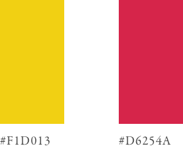

KSA Mission Statement
KSA strives to cultivate and promote an interest in the culture, history and other issues of the Korean and Korean-American experience.
KSA’s purpose as an organization is to provide various opportunities for Wellesley College students and other persons outside the Wellesley College community to come together on a social, cultural, political, and educational plane.
Visual Design
I lead the visual design for the culture show with the goal of communicating the essence of what KSA is all about: fun, community, and promoting an atmosphere in Wellesley College and the greater Boston area that is encouraging for anyone who is interested in Korean culture.
Culture Show Poster

Photo courtesy of Larisa Ellers (Seoul skyline)
After Party Poster

Photo courtesy of Emily Direnzo (Saint Pablo Tour)
Branding
Colors
Typography
Logo